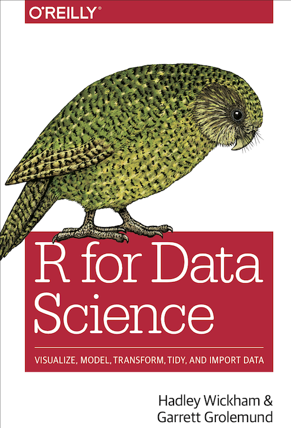

前言
本课程主要根据《数据科学中的R语言》的课程内容, 略作修改，重点介绍基本的R编程与作图内容。推荐大家阅读原课程内容以及Hadley Wickham的
r4ds这本书 (Grolemund and Wickham 2017), r4ds这本书的第二版已于2023年6月发行。

关于课程
- R编程基础
- 第 1 章介绍R语言及资料推荐
- 第 2 章介绍安装与环境配置
- 第 3 章介绍R语言中一切都是对象
- 第 4 章介绍向量
- 第 5 章介绍R语言数据结构
- 第 6 章介绍运算符及向量运算
- 第 7 章介绍R语言中的函数
- 第 8 章介绍函数的应用
- 第 9 章介绍R语言中的子集选取
- 数据读入与处理
- 第 10 章介绍数据读入
- 第 11 章介绍数据处理
- 第 12 章介绍dplyr的应用
- 第 13 章介绍数据规整1
- 第 14 章介绍数据规整2
- 第 15 章介绍字符串处理
- 第 16 章介绍简单数据框
- 第 17 章回望Tidyverse之旅
- 画图
- 第 18 章介绍数据可视化
- 第 19 章ggplot2几何形状
- 第 20 章ggplot2的标度
- 第 21 章ggplot2的主题
- 第 22 章ggplot2的图例
- 第 23 章ggplot2扩展内容
- 第 24 章ggplot2统计图层
- 第 25 章ggplot2从图层到几何形状
- 第 26 章ggplot2数据可视化中的配色
- 第 27 章ggplot2如何控制图例的外观
- 第 28 章ggplot2中的延迟映射
- 第 29 章介绍科研数据可视化中的统计分布图
- 第 30 章让你的数据骚动起来
- 第 31 章ggplot2中传递函数作为参数值
- 可重复性文档Rmarkdown以及练习
- 第 32 章介绍可重复性文档
- 第 33 章一日一练
- GO/KEGG富集分析